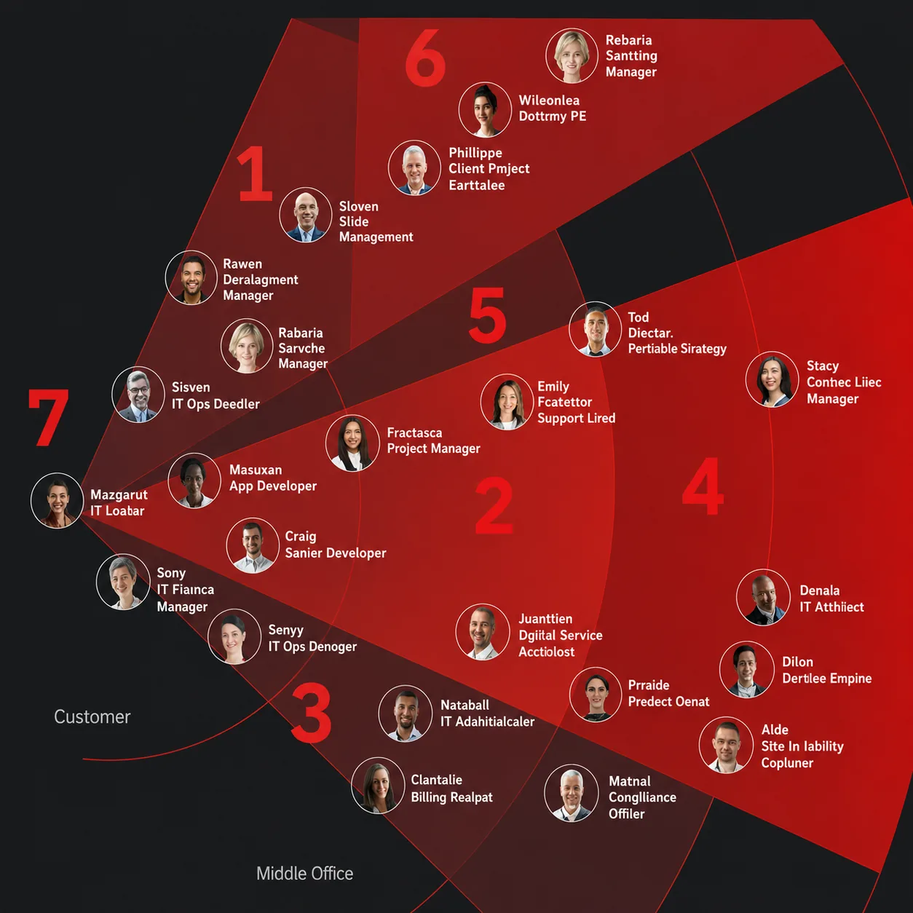
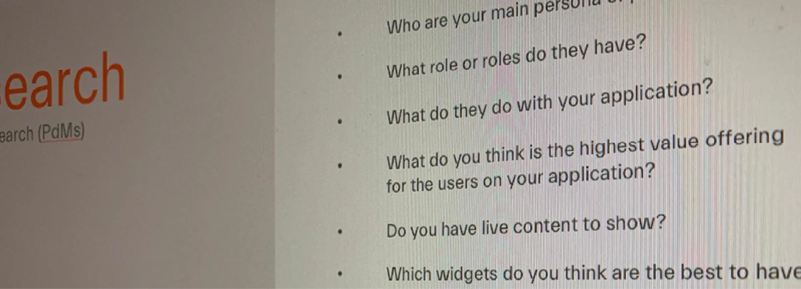
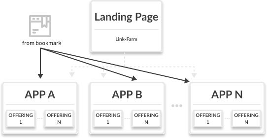
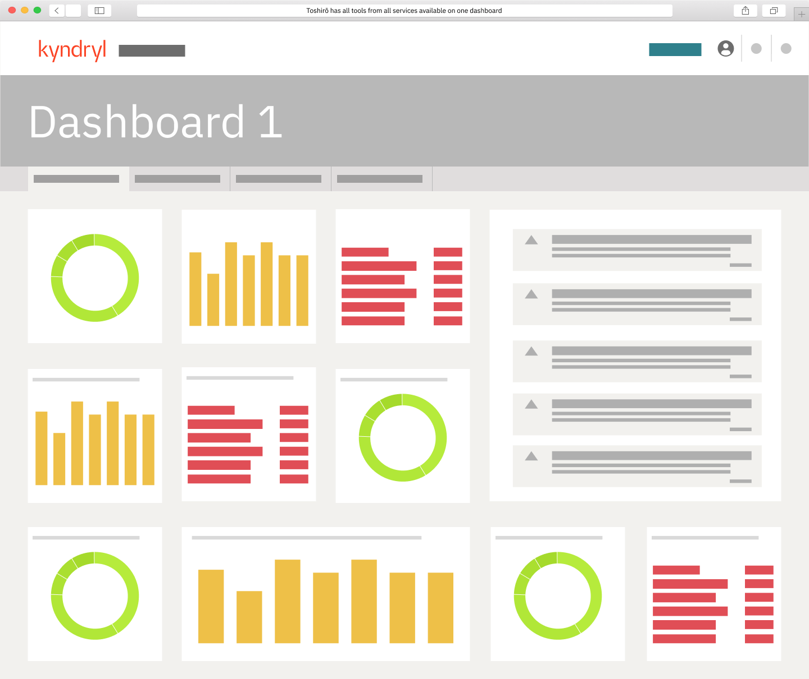
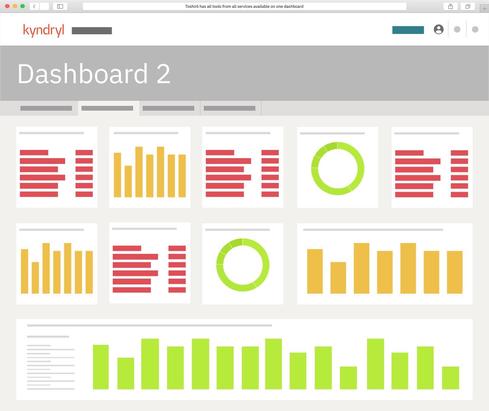
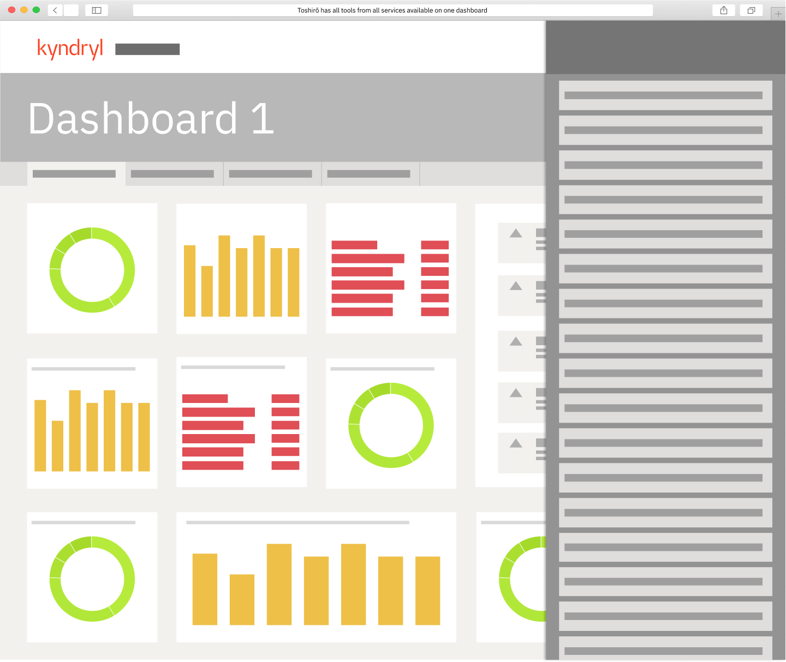
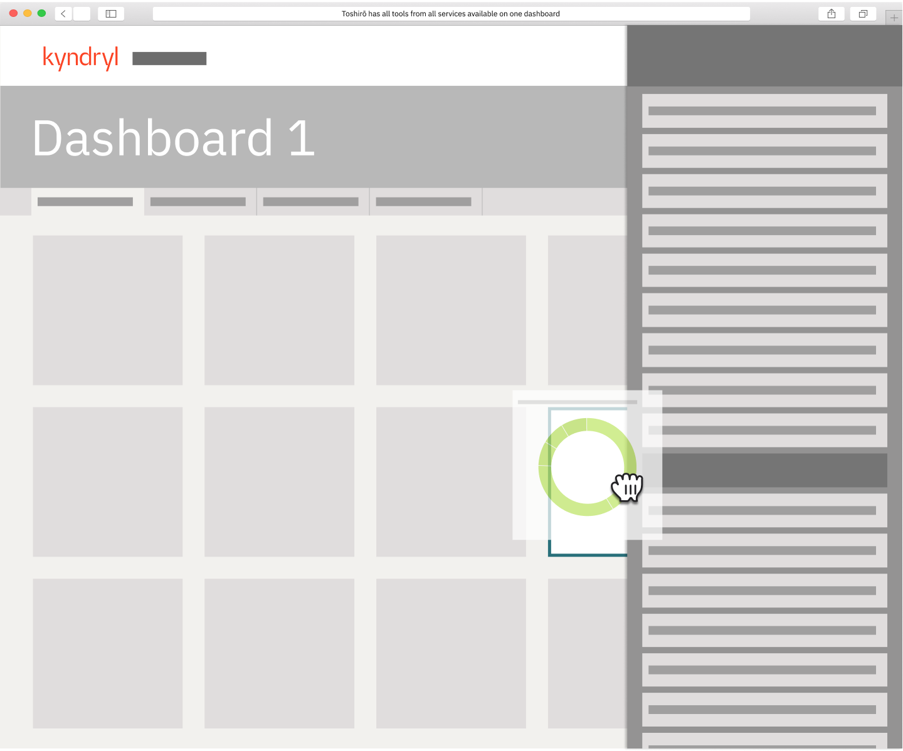
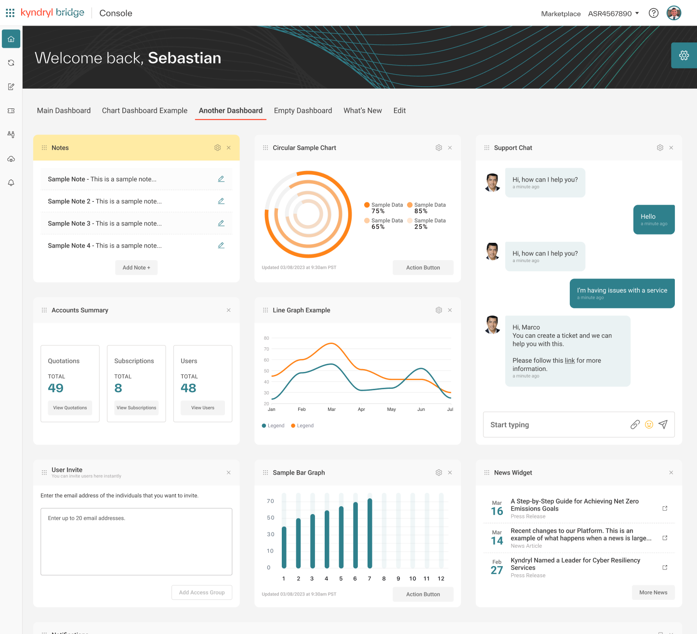
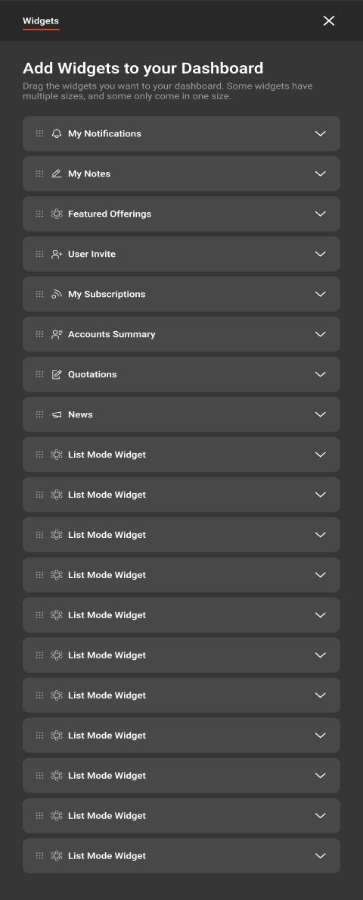

The
Problem
Kyndryl Bridge is the multi cloud management platform Kyndryl's enterprise clients work in. Its landing page was a static link farm meant for new users, and under 5% used it regularly: most people bookmarked the apps they needed and skipped it.
Returning users got nothing from it. No shortcuts to their own workflows, just the same repetitive steps every time.

Research
I started by listening: delivery partners, product owners, UX designers and development managers first, then the users themselves.
What I heard reframed the brief. People did not need a better list of links; they needed a starting point built around their own work.
The
Decision
- Why links could not workBridge applications run independently but share accounts, users and permissions. A static list could not adapt to that many use cases.
- The betI pivoted the project into a dynamic, personalized dashboard. The tradeoff: a bigger, more resource intensive build that needed leadership to back it.
- The pitchJourneys for each persona showed where navigation broke down. Low fidelity mockups of the dashboard won leadership buy in; mid fidelity in Figma added customizable layouts, multiple dashboards and permission aware sharing.





Standardization
& Delivery
Engineering teams across every Bridge application built the widgets. I coordinated that multi team effort and wrote the widget guidelines and process that kept every application consistent.


Looking
Back
What went well?
The pitch changed the scopeLow fidelity mockups turned a static UI update into a user centered dashboard project.
Listening shaped the featuresInterview insights drove the personalized features that answered the under 5% usage.
Shared standards heldClear widget guidelines kept many teams and applications consistent.
What would I do differently?
Share the roomI led the internal playbacks. Inviting team members to co facilitate would have spread ownership and grown leadership across functions.
Plan the follow upA formal post launch monitoring framework would have brought user feedback in faster and kept the dashboard improving.